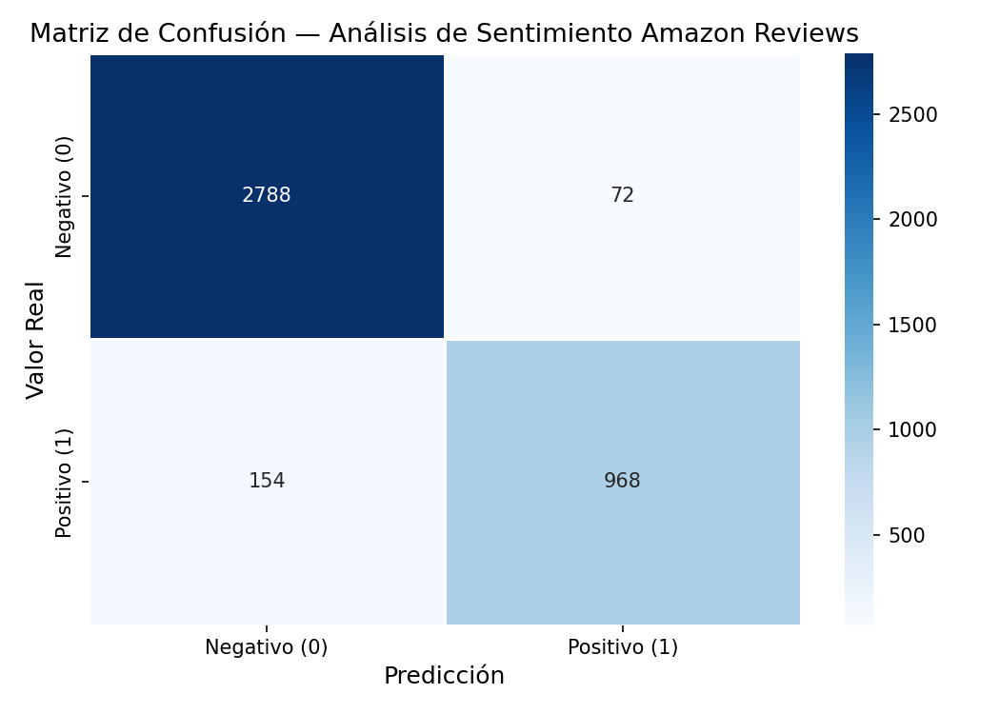
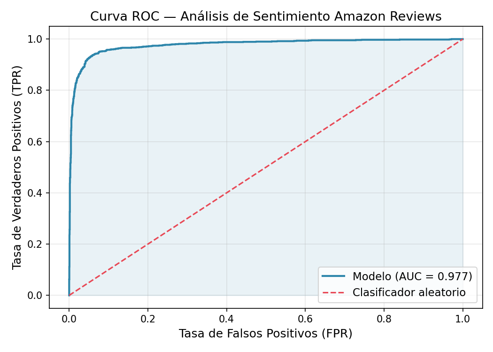
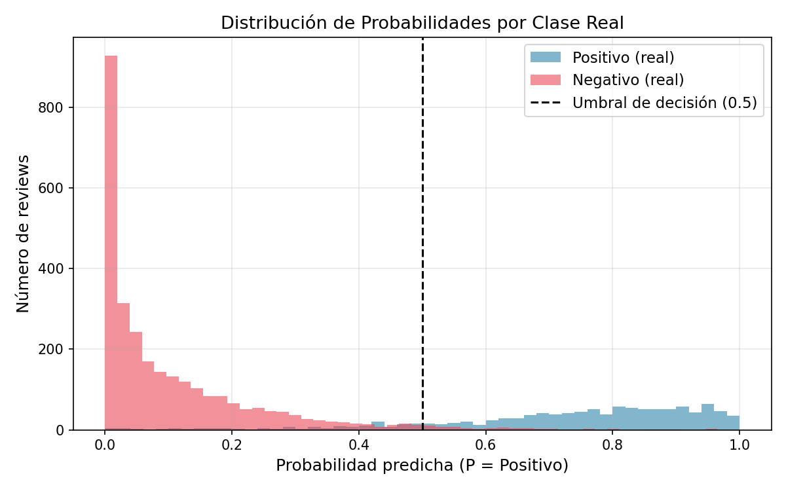

| Label | ||
|---|---|---|
1 |
||
null |
||
0 |



test_transform.py |
||
test_api.py |
||
test_model_quality.py |
| Python | 3.11 | |
| PySpark | 3.5.1 | |
| OpenJDK | 17 | |
| scikit-learn | 1.5.0 | |
| Matplotlib / Seaborn | 3.9 / 0.13 | |
| FastAPI | 0.111 | |
| Gradio | 4.36 | |
| pytest | 8.2 | |
| Docker + Compose | ≥ 24 |